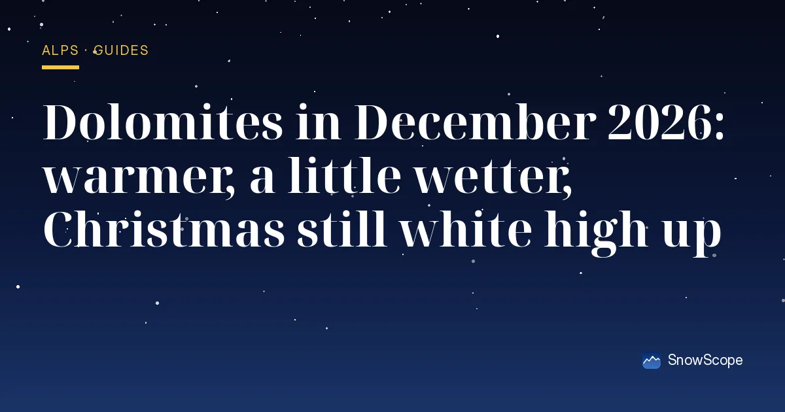
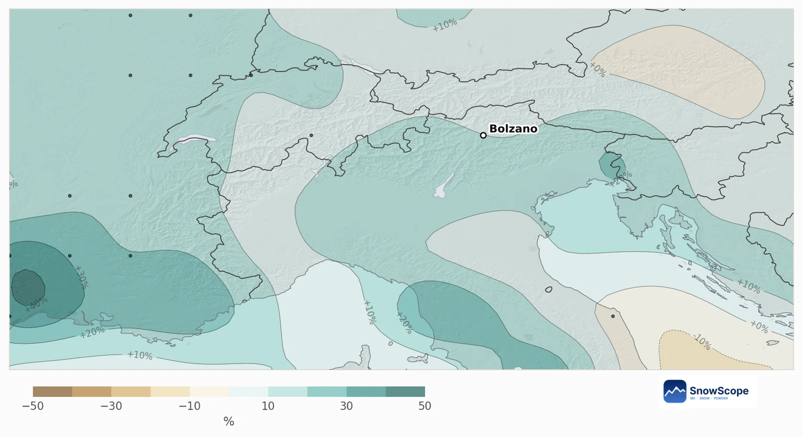

Dolomites in December 2026: warmer, a little wetter, Christmas still white high up
December across the Dolomites is set to run warmer and slightly wetter than past winters. The SnowScope map shows no clear signal across much of the range, with 42 % leaning toward thinner snow, yet Christmas remains very likely white at mid-mountain elevations.
See the live snow forecast for Dolomites in the SnowScope appSnow depth, powder alerts and the 3D map, free.

The snow map tells a mixed story
When we compare the Dolomites area by area with its own past Decembers, the picture is uncertain. Across the range, 58 % shows no clear signal either way. The remaining 42 % tilts lean, mostly in the northern Pustertal valleys and the south-east around the Cadore. No part of the range shows a snowier tilt.
The odds of above-average new snow through December stay modest: between 34 % and 46 %, with a middle value of 41 %. In other words, more new snow than usual is possible but not the most likely outcome.
What makes December warmer
Fifty-one seasonal forecasts from the European weather centre agree that December will be about 1.7 °C warmer than the reference climate of past winters. Eight out of ten runs show warming. Precipitation sits 12 % above a usual December total of 70 mm, but the ensemble is split: 53 % of runs are wetter.
In the Dolomites, big snow falls when storms push in from the south. When the month runs warmer, the snow line climbs higher, and precipitation that might have been snow at lower elevations falls as rain instead. Mid and high elevations catch more of the snow, while valleys depend increasingly on machine-made cover.


New snow forecast and December depth
Across the main ski areas—Val Gardena, Alta Badia, Cortina d'Ampezzo, Val di Fassa and Seiser Alm—a typical December brings 24 cm of new snow at mid-mountain. This forecast calls for 21 cm. By 31 December, the usual depth is 33 cm; the outlook is 30 cm. These are close to normal, within the natural year-to-year swings.
The chance of ending the month with more snow than usual stands at 41 %. This means that while lean outcomes are possible, the forecast is not pointing toward a notably thin December. Much will hinge on when storms arrive and how strong they are.
Christmas Day snow at Val Gardena
Val Gardena at mid-mountain (1882 m) has seen at least 5 cm of snow on Christmas Day in 42 of the last 45 winters—a 93 % likelihood. This forecast keeps that high: 91 % of the seasonal ensemble brings a white Christmas. The expected depth on 25 December is 25 cm, slightly less than the usual 27 cm, but still solidly skiable.
Higher slopes in the Dolomites are even more reliably white at Christmas. Valley bases in a warm December are the uncertain zones; they typically depend on grooming and machine snow.
How this December compares with past winters
The past Decembers with forecast patterns most similar to this outlook are 2014, 2023 and 2013. None of those were notably snow-rich or snow-poor; they were ordinary months with mid-range snowfall and depth. That sets the tone for planning: expect a December in the middle of the typical range.
One caveat matters: a single southern storm system can alter the month's total by 10 cm or more. The 7-day forecast will be your best guide if a system threatens; watch for the timing and track carefully.
Tips for skiers
- Plan early December days on higher lifts and ridges, where snow is more reliable than in the valleys.
- Check the 7-day forecast weekly for south-moving storm systems, which can deliver significant snow to the Dolomites.
- Compare the SnowScope map across different valleys: the snow line can shift by several hundred metres between the Pustertal and Val di Fassa in a warm spell.
- If you have Christmas plans, book mid and high-mountain terrain with confidence; valley runs will be more dependent on grooming.
- Pack layers for warmth during the day but expect variable conditions; a 1.7 °C anomaly means some runs may carry rain-crust in early morning before they firm.
About these numbers
Resort snow depths are the deepest snow on the resort's upper slopes on the date shown; they are estimates for an area, not a measurement at one point. Forecasts can change. Always read the official avalanche bulletin before going off-piste.
Cite this report
For research, teaching or the press: the numbers and charts are free to reuse under CC BY 4.0 with this citation.
SnowScope (2026), Dolomites in December 2026: warmer, a little wetter, Christmas still white high up, https://snowscope.app/blog/en/2026/11/dolomites-december-2026-snow-outlook.html, accessed 2026-11-10
SnowScope (Atlas Labs). (2026, November 10). Dolomites in December 2026: warmer, a little wetter, Christmas still white high up. SnowScope snow reports. https://snowscope.app/blog/en/2026/11/dolomites-december-2026-snow-outlook.html
BibTeX
@misc{snowscope2026dolomitesdecember2026sno,
author = {{SnowScope (Atlas Labs)}},
title = {Dolomites in December 2026: warmer, a little wetter, Christmas still white high up},
year = {2026},
month = nov,
howpublished = {\url{https://snowscope.app/blog/en/2026/11/dolomites-december-2026-snow-outlook.html}},
note = {Published 2026-11-10 12:17 UTC; accessed 2026-11-10}
}· CC BY 4.0 · Methods, data and tools →
Follow Dolomites
Free: a message when fresh snow is coming, and the forecast every morning.
More snow reports

When to book Courchevel and the 3 Vallées, which village to stay in and where the snow lasts, planned from 46 past winters of snow data.

Cortina d'Ampezzo three ways: Tofana, Faloria-Cristallo and Cinque Torri-Lagazuoi, with 46 winters of snow data at three heights.

Bonneval-sur-Arc sits at 1,794 m in the high Arc valley, closed off by the Iseran in winter. Snow depth ranges from 99 cm at base to 335 cm at the top. Data from 46 past winters, November 2026.